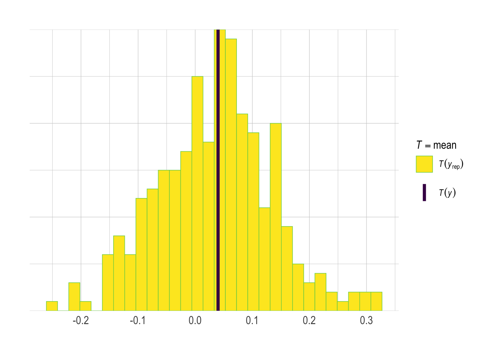
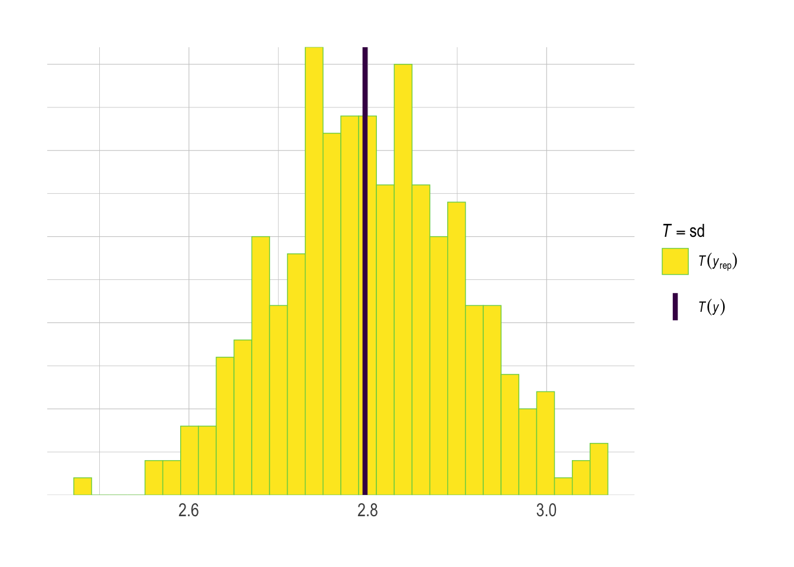
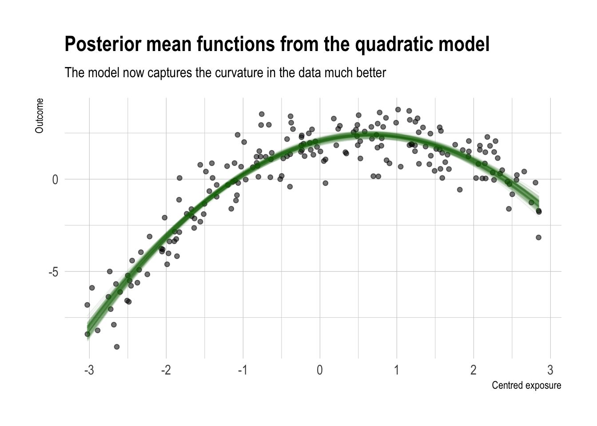

SHARP Bayesian Modeling for Environmental Health Workshop
Author
Robbie M. Parks
Published
August 5, 2026
Goal of this computing lab session
The goal of this lab is to take the ideas from the Bayesian workflow lecture and work through a full workflow in NIMBLE, starting from simulated data so that every step is fully transparent.
It builds directly on the earlier NIMBLE lab: we again simulate data with known parameters, write the model with priors first and the formula second, run several chains from different starting values, and check rhat before trusting anything. What is new here is everything that sits around the model fit: choosing priors deliberately, checking them before seeing the data, and checking the fitted model afterwards.
What’s going to happen in this lab session?
During this lab session, we will:
Simulate data from a known data-generating process;
Perform prior predictive checks, including diagnosing priors that are too wide and too narrow;
Fit a first model with MCMC and assess convergence using trace plots, rhat, and effective sample size;
Perform posterior predictive checks and identify where the model is misspecified;
Improve the model and compare results across specifications; and
Run a sensitivity analysis to see whether our conclusions depend on the priors.
The workflow followed here is a simplified version of the one described in Gelman et al. (2020), “Bayesian Workflow”.
Define research question
Suppose we are interested in the relationship between a continuous environmental exposure and a continuous health outcome.
How do we build, check, diagnose, and refine a Bayesian model so that it can recover the underlying signal in the data?
Step 0: Preparation
We will simulate data where the true relationship is slightly nonlinear. This is useful because it lets us see what happens when we fit both a poor model and a better model.
As in the earlier NIMBLE lab, we know the true data-generating process, so we can check whether each model recovers it:
As in the earlier lab, we centre the exposure before modelling, which helps MCMC performance. Centring shifts the intercept but leaves the curvature unchanged, so after centring the true values are approximately (), (_1 ), (_2 = -0.8) and (= 1).
dat <- dat |>mutate(x_c = x -mean(x),x2 = x_c^2 )
Visualise the data
The solid line is the true mean function, which we only know because we simulated the data.
We will begin with a linear Normal model even though the true relationship is nonlinear.
\[
\begin{split}
y_i &\sim \text{Normal}(\mu_i, \sigma) \quad i = 1,..., N \\
\mu_i &= \alpha + \beta x_i
\end{split}
\]
This is a useful starting point because the Bayesian workflow is not just about fitting a model once. It is about fitting, checking, diagnosing, and improving.
Step 2: Prior predictive checks
A prior predictive check asks: If our priors were true, what sort of data would the model imply before seeing the observed data?
We will look at three cases:
a bad overly wide prior;
a bad overly restrictive prior; and
a more reasonable weakly informative prior.
Create a grid of exposure values
All three checks use the same grid of centred exposure values, so the three plots are directly comparable.
n_sims <-200# number of prior draws to simulate for each checkx_grid <-seq(min(dat$x_c), max(dat$x_c), length.out =100)
As in the earlier lab, we supply one set of starting values per chain, deliberately spread out, so that rhat is comparing chains that began in genuinely different places.
We will deliberately run a short MCMC first to mimic a common classroom situation where a model has been fit, but diagnostics have not really been checked yet.
Now we run the same model more carefully: many more iterations, a longer burn in, and four chains rather than the two-chain minimum.
We also introduce thin, which keeps only every fifth sample. Successive MCMC samples are correlated with each other, so thinning trades a little information for a much smaller object to carry around. It is not a fix for a badly mixing chain.
ggplot(prior_quad, aes(x = x_c, y = y_rep, group = sim)) +geom_line(alpha =0.06) +labs(title ="Prior predictive check for the quadratic model",subtitle ="The model now allows both linear and curved relationships",x ="Centred exposure",y ="Simulated outcome" )
ppc_stat(y = dat$y, yrep = yrep_quad, stat ="mean")
Note: in most cases the default test statistic 'mean' is too weak to detect anything of interest.
`stat_bin()` using `bins = 30`. Pick better value `binwidth`.

ppc_stat(y = dat$y, yrep = yrep_quad, stat ="sd")
`stat_bin()` using `bins = 30`. Pick better value `binwidth`.

Compare fitted curves with observed data
pp_quads <-map_dfr(1:100, function(j) { d <- draw_ids_quad[j]tibble(draw = j,x_c = dat$x_c,mu = draws_quad$alpha[d] + draws_quad$beta1[d] * dat$x_c + draws_quad$beta2[d] * dat$x2 )})ggplot(dat, aes(x = x_c, y = y)) +geom_point(alpha =0.55) +geom_line(data = pp_quads,aes(y = mu, group = draw),alpha =0.08,color ="darkgreen" ) +labs(title ="Posterior mean functions from the quadratic model",subtitle ="The model now captures the curvature in the data much better",x ="Centred exposure",y ="Outcome" )

Step 9: Compare the poor model and the improved model
Compare posterior predictive distributions side by side
With 200 observations the data are informative enough that this change makes very little difference, which is the reassuring outcome. If the two sets of intervals had looked substantially different, that would be a signal that our conclusions were being driven by the prior rather than by the data, and we would need to justify the prior carefully or collect more data.
Closing remarks
In this lab session, we have worked through a full Bayesian workflow rather than a single model fit. We simulated data from a known process, chose priors and checked them before seeing the data, fitted a model that we knew was too simple, used posterior predictive checks to discover exactly how it failed, improved it, and finally asked whether our conclusions were sensitive to the priors.
The key idea to take away is that none of the individual steps are new: the NIMBLE code, the four chains, and rhat are all from the earlier lab. What is new is the loop. A Bayesian analysis is rarely finished at the first fit, and the checks are what tell you where to go next.
Two things worth remembering when you apply this to real data:
We used simulated data here, so we always knew the right answer. In the real world you will not have mu_true to plot against, which makes posterior predictive checks much more important rather than less.
Prior predictive checks are cheap. They cost no MCMC time at all, and they catch problems that are hard to diagnose once the sampler is already struggling.
We will meet these same checks again later in the workshop with more complex spatial and temporal models, where the priors matter considerably more than they do here.